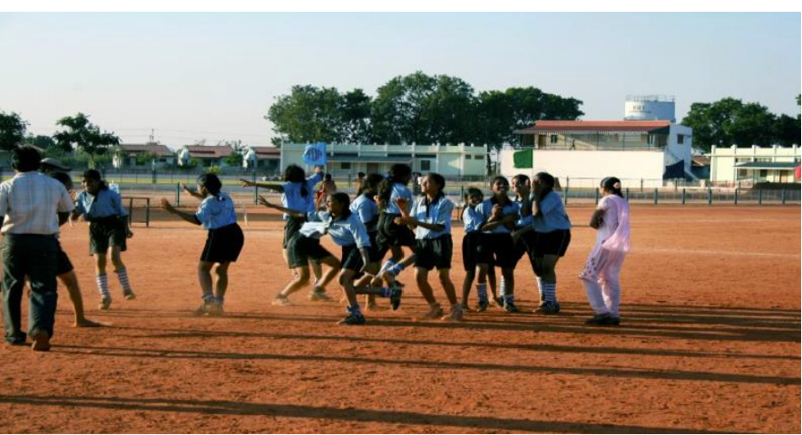
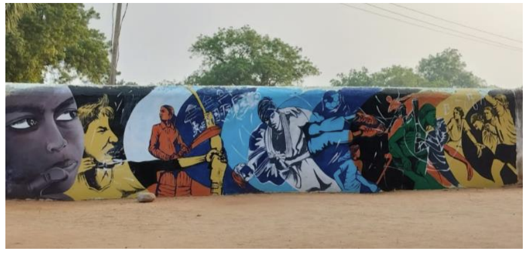

Sports For Development
 
In the heartlands of rural areas, where the echoes of marginalized families often go unheard, a profound transformation is underway through the visionary lens of Rural Development Trust (RDT). The poignant realization that children from these backgrounds are often denied the simple joys of play and the myriad benefits that sports bring in their formative years catalyzed RDT into action. The belief is deeply rooted: by providing access to sports, imparting education, and empowering the youth, barriers can be shattered, bridges can be built, and robust, equitable communities can emerge. In the nascent stages of this endeavor, back in 1979, RDT pioneered sports activities through supplementary schools. The intention was clear – to carve out spaces where children, despite their marginalized backgrounds, could experience the joy and camaraderie that sports offer. This early initiative laid the foundation for what would eventually burgeon into a more structured and impactful Sports for Development program.
The turning point came in the year 2000, marking the formal establishment of the Anantapur Sports Academy. This marked a paradigm shift, ushering in a new era for RDT's commitment to using sports as a catalyst for holistic development. The Sports for Development program became the cornerstone of RDT's strategy, encapsulating the belief that sports have the power to not only entertain but also to educate, empower, and elevate communities. At its core, the Sports for Development program operates on the principle that access to sports is a fundamental right for every child, irrespective of their socio-economic background. The program recognizes the intrinsic value of sports in instilling essential life skills, fostering teamwork, and imparting values that transcend the boundaries of the playing field. By providing this access, RDT aims to bridge the gap that often separates marginalized children from the transformative experiences that sports bring.
Anantapur Sports Academy emerges as the epicenter of this transformative journey. It serves as a hub where dreams are nurtured, potentials are unlocked, and aspirations take flight. The academy is not merely a training ground for athletic prowess but a holistic learning environment that nurtures the physical, mental, and emotional well-being of its participants. Education is interwoven into the fabric of the Sports for Development program, recognizing that knowledge is a powerful tool for empowerment. The academy is not just about honing athletic skills; it's about nurturing educated, informed individuals who can carry the torch of change back to their communities. Beyond the sports arena, participants receive educational support, ensuring that they have the tools to navigate a path towards a brighter future. Empowerment is a guiding principle, with a vision that extends beyond the immediate impact of sports. Through the Sports for Development program, youth are equipped with essential life skills, leadership qualities, and a sense of resilience that transcends the boundaries of the sports field. These empowered individuals become agents of change, contributing to the creation of equitable, thriving communities
Objectives:
Anantapur Sports Academy:
Anantapur Sports Academy (ASA), a sports development initiated by the Rural Development Trust (RDT) in Anantapur, Andhra Pradesh. RDT believes that participation of youth in sports is necessary for the growth, self-esteem, and confidence of rural children. In light of this, RDT has been undertaking suitable initiatives since the year 2000, through the Anantapur Sports Academy (ASA), to bring out hidden talents of rural children in different sporting disciplines.
Anantapur Sports Academy (ASA), a sports development initiated by the Rural Development Trust (RDT) in Anantapur, Andhra Pradesh. RDT believes that participation of youth in sports is necessary for the growth, self-esteem, and confidence of rural children. In light of this, RDT has been undertaking suitable initiatives since the year 2000, through the Anantapur Sports Academy (ASA), to bring out hidden talents of rural children in different sporting disciplines. The Anantapur Sports Academy (ASA), founded in 2000, presently caters to 8 disciplines, namely
The ASA ensures the holistic development of the youth of Anantapur, especially those from underprivileged and marginalised backgrounds, by providing them with quality and sustainable access to sports coaching, infrastructure, and equipment, along with a focus on education, nutrition, and career development